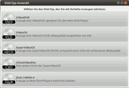
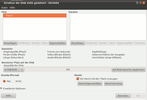
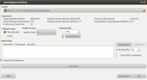

DeVeDe
Dieser Artikel wurde für die folgenden Ubuntu-Versionen getestet:
Ubuntu 14.04 Trusty Tahr
Zum Verständnis dieses Artikels sind folgende Seiten hilfreich:
Mit der Software DeVeDe  gibt es eine DVD-Authoring Software für Linux und Windows, mit der eine VCD, SVCD, DVD, CVD (gleichwertig zur SVCD, aber mit geringerer Auflösung; speziell für China entwickelt) und DivX-Medien ohne viel Aufwand erstellt werden kann. Das Programm unterstützt alle Videodateien, die im MPEG-, AVI- oder MOV-Format vorliegen und basiert auf Python und GTK 2.
gibt es eine DVD-Authoring Software für Linux und Windows, mit der eine VCD, SVCD, DVD, CVD (gleichwertig zur SVCD, aber mit geringerer Auflösung; speziell für China entwickelt) und DivX-Medien ohne viel Aufwand erstellt werden kann. Das Programm unterstützt alle Videodateien, die im MPEG-, AVI- oder MOV-Format vorliegen und basiert auf Python und GTK 2.
Derzeit wird der Nachfolger DevedeNG entwickelt, der auf Python 3 und GTK 3 aufbaut (Stand: August 2014).
Installation¶
DeVeDe ist in den offiziellen Paketquellen enthalten. Installiert [1] wird das Programm mit dem Paket:
devede (multiverse)
 mit apturl
mit apturl
Paketliste zum Kopieren:
sudo apt-get install devede
sudo aptitude install devede
Während der Installation werden weitere abhängige Pakete wie der Videoplayer MPlayer (ab Ubuntu 14.04 MPlayer2 ) und die Kommandozeilen-Werkzeuge MEncoder, dvdauthor und vcdimager mitinstalliert.
Fremdpaket¶
Die aktuelle Version findet man auf der Projektseite als DEB-Paket. Dieses wird heruntergeladen und manuell installiert [2].
Hinweis!
Fremdpakete können das System gefährden.
Aus dem Quelltext¶
Um DeVeDe aus dem Quellcode zu kompilieren [3], ist nur wenig Handarbeit vonnöten. Zuerst werden die folgenden Pakete benötigt:
python-support
debhelper
mit apturl
Paketliste zum Kopieren:
sudo apt-get install python-support debhelper
sudo aptitude install python-support debhelper
Danach wird der Quellcode  heruntergeladen und entpackt [4]. Jetzt wechselt man in das Verzeichnis und öffnet ein Terminal [5]. Nun wird der folgende Befehl ausgeführt:
heruntergeladen und entpackt [4]. Jetzt wechselt man in das Verzeichnis und öffnet ein Terminal [5]. Nun wird der folgende Befehl ausgeführt:
sudo checkinstall ./install.sh
Wenn nichts schiefgegangen ist, sollte DeVeDe kompiliert und ein .deb-Paket erstellt werden, das automatisch installiert wird.
Benutzung¶
Hinweis:
DeVeDe besitzt ab Programmversion 3.0 die Möglichkeit, DivX-Medien und DVD-Menüs zu erstellen.
Jetzt kann DeVeDe mit dem Befehl "devede" [6] oder bei Ubuntu-Varianten mit einem Anwendungsmenü über "Unterhaltungsmedien -> DeVeDe" gestartet werden.
|  |
| Start |
|  |
| Hauptmenü |
|  |
| Optionen |
Im Startfenster kann man auswählen, welche Art von Video-Disk erstellt werden möchte. Als Beispiel wird hier eine Video-DVD erzeugt. Die Dialoge sind bei den anderen Typen gleich beziehungsweise sehr ähnlich aufgebaut.
Danach gelangt man ins Hauptfenster und klickt unter "Dateien" auf "Hinzufügen" und wählt die Videodateien aus. Wenn mehrere Filmdateien unter "Titel" hinzugefügt werden, dann werden diese später beim Authoring zu einem zusammenhängenden Film zusammengefügt. Möchte man jedoch mehrere unabhängige Filme auf eine DVD brennen, dann erstellt man mehrere Titel über "Hinzufügen" unter "Titel". Die Informationen unter "Datei Info" sind eigentlich selbsterklärend. Mit "Speicherverbrauch" wird die Platzbelegung in Prozent angezeigt.
Falls die Auslegung über 100% beträgt, wählt man einfach ein anderes Medium oder man klickt die Videodatei(en) an und geht anschließend auf "Eigenschaften". Hier kann die Bitrate des Video- und Audiostroms verändert werden. Jedoch sollte die Video-Bitrate nicht unter 1500 kbit/s und die Audio-Bitrate nicht unter 128 kbit/s liegen, da das Ergebnis eine geringe Qualität ist. Häufig verrechnet sich das Programm aber und am Ende passt ein Video, das zuvor zum Beispiel mit 120% der Kapazität angezeigt wurde, doch ganz locker auf das Medium.
Als "Ausgabe Video Format" stellt man "PAL/SECAM" ein (Standard in Deutschland). Unter "Misc" (erweiterte Optionen) kann nun noch eingestellt werden, ob das Video automatisch in Kapitel unterteilt werden soll. Hier können auch Untertitel aus entsprechenden Textdateien hinzugefügt werden. Eine Spezialfunktion ist "Diese Datei ist bereits eine DVD/xCD-konforme MPEG-PS-Datei" (siehe unten).
Zurück im Hauptmenü unter "Aktion" wählt man entweder "Erzeuge Struktur der Disc", "Erzeuge ein ISO oder BIN/CUE Image" oder "Nur MPEG Video Dateien erzeugen". Dadurch werden einmal die bekannten VIDEO_TS- und AUDIO_TS-Ordner erstellt bzw. ein .iso-Image, welches mit einem Brennprogramm auf eine DVD gebrannt werden kann.
Hinweis:
Falls man eine .iso-Datei erstellt, bitte noch beachten, dass auf Partitionen mit einem FAT32-Dateisystem keine Dateien größer als 4 GiB gespeichert werden können.
Je nach Filmlänge und Rechenleistung kann das Erstellen zwischen 30 - 90 Minuten in Anspruch nehmen (bei leistungsschwachen Computern noch länger).
Transcoding deaktivieren¶
DeVeDe verfügt über eine Funktion, um Videos von einer Encodierung auszunehmen und dadurch eine zeitaufwendige Umwandlung zu umgehen. Um dies zu bewerkstelligen, fügt man das Video hinzu und öffnet die "Erweiterten Optionen -> Misc" und aktiviert den Punkt "Diese Datei ist bereits eine DVD/xCD-konforme MPEG-PS-Datei". Es versteht sich von selbst, dass dies aber nur bei bereits DVD-konformen Videodateien klappt.
Links¶
À la carte – DVDs erzeugen mit DeVeDe
 - LinuxUser, 05/2012
- LinuxUser, 05/2012DVD mit Menüs erstellen und brennen
- Blogbeitrag, 01/2009DeVeDe – ein DVD-Authoring-Programm
- freiesMagazin, 03/2007DVD-Authoring
 Programmübersicht
ProgrammübersichtDeVeDe NG - Nachfolgeprojetkt von DeVeDe
- Erstellt mit Inyoka
-
 2004 – 2017 ubuntuusers.de • Einige Rechte vorbehalten
2004 – 2017 ubuntuusers.de • Einige Rechte vorbehalten
Lizenz • Kontakt • Datenschutz • Impressum • Serverstatus -
Serverhousing gespendet von